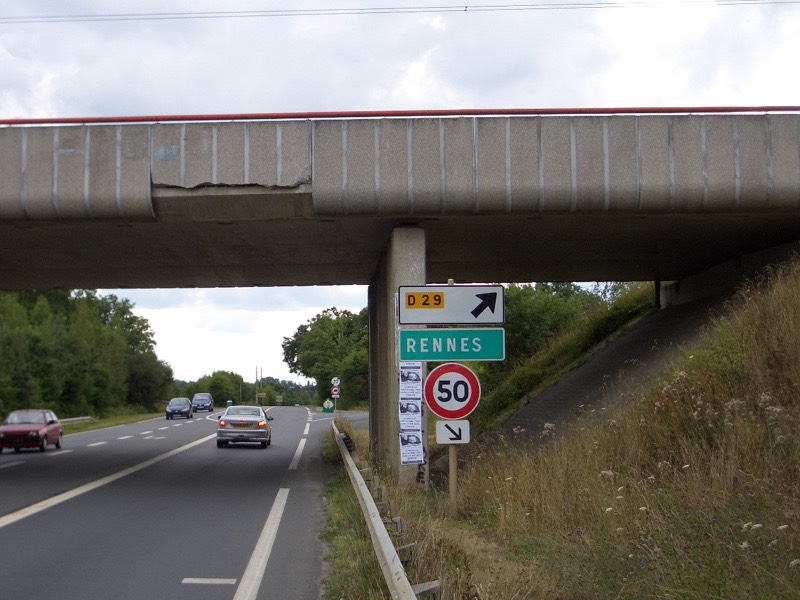
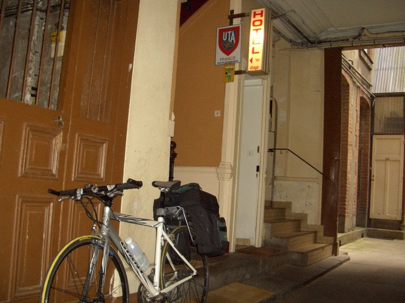

昨天弄丟錢包之後，晚上就做了奇怪的夢，夢到把iBook、iPod、Z55，全都弄不見了。
看到人就拼命問，有沒有看到我的iBook？有沒有看到我的iPod？
然後每個人講的方向都不一樣，找了半天一樣也沒找回來....
接著就在清晨（大概八點對我來說叫清晨）的鳥叫聲中起床。
所有的家當都好好的在桌上充著電，所有的東西都安然無恙，這才安了心。
掉錢事小，個人物品要保管好，不可以再有下一次了。
睡醒才發現，已經八月了耶！？好快呀∼真是光陰似箭
八月一整個月都待在法國，逐漸往南法移動，應該會越來越熱才是。
台灣這時候想必每天都在35度左右徘徊，法國的在還沒過中午之前，大約都是20度左右。
不批上薄外套會有一點點冷的氣溫，騎起車來相當舒服 :)
一邊收拾行李，一邊吃昨天還吃完的大餅乾充當早餐。
收拾完行李，準備上路，在還沒離開城鎮之前，我就像個風水師一樣，拿著iBook當羅盤，
在街上走來走去，風水師是在看風水，我是在找無線網路的訊號。
這幾次都蠻順利可以在路邊找到偷用的機會，找久了也有點心得，彷彿裝了無線網路感應器。
要訣就是，熱鬧的地方、商店多的地方，機會比較大。
在路邊捧著iBook（這邊的訊號要高一點訊號才會比較強），相當手酸的上傳了最新的遊記。
一天上傳一則才叫連載嘛∼但真的沒有網路可以用的時候，也只好積著了。
就這樣，等傳好的時候，居然已經中午十一點了！稍微拖到一點時間，不出發不行啦∼
一開始先走D973，路標做的非常之小，幸好有發現。
然後轉戰N175，標明了往雷恩是100公里整。
不近不遠的距離，一天騎過去剛剛好，只可惜這都是理想，跟事實有一段差距。
路上看到迷你馬，肚子大大、頭髮長到蓋住眼睛、腳短的可以，挺可愛的。
上N175之前，想說沒那麼倒楣，又是高速公路了吧？
雖然沒有看到禁行腳踏車的牌子，但那個藍色的交通牌，感覺有一點點像是『汽車專用道』。
先走再講，不走N175的話，看看地圖，也沒別的選擇可以離開這裡了。
果然騎沒多就又被叭∼！當作沒聽見繼續騎，結果還是被攔下來了。
不過這次攔我的不是警察，是施工中的交通車，好心的工作人員說這邊不能走。
不能走？那叫我怎麼辦呢？逆向騎回去嗎？
還是繼續往前到交流道才下去（那起碼可以多騎上好一段路先離開這裡再講）？
答案是，直接把腳踏車抬過分隔島，從旁邊的小路走。
這下可好，又走在地圖沒有標記的路上面，依照他的講法，繞點路還是可以前進的。
就這麼離開了直達目的地的N175，再次進行迷路X小路大作戰。
順著迷樣的小路，看到N175筆直的前進，而我卻往反方向走，重點是我居然在爬山。
爬了半小時的山路，身在何處完全不曉得，中午十二點半，補充熱量的時候到了。
到麵包店買了看起來很可口的蘋果派，1.25歐元。

還有我以為是葡萄麵包，結果那黑黑點其實是巧克力的麵包，0.9歐元。
從沒吃過這麼道地的蘋果派是什麼滋味，才咬了一小口，我就哭了 T_T
老天爺呀∼這未免太∼∼太∼∼甜了吧！！
這比大口吃巧克力醬、大口喝蜂蜜，一口氣嚼十個飛壘口香糖還要甜上N倍。
要是螞蟻不小心吃到這個，大概這輩子不會想再吃甜食了。
用這個蘋果派，可以沖泡十加侖的蘋果汁還有剩。
瞬間味覺被破壞掉，擦乾眼淚，還是把它吃完了。
喝好多水，接著吃巧克力奶油麵包，本來也是暴甜口味的，現在吃起來跟白土司沒兩樣。
村裡相當罕見的飄揚著美國的國旗，底下還有一台坦克車，這邊大概在戰時陣亡了不少美軍吧。
之後再路上還有看到美軍公墓的指標，可惜不太順路就沒有繞過去參觀。
測試相機拍花的效果，附帶一提，這種程度的花，隨便的街道都隨處可見。
離開這個小鎮之後，還是看到接著N175的道路，看的見卻沒辦法騎上去，天絕我路嗎？
大路不能走，看到腳踏車的圖案，就跟著去吧，通到哪算哪，隨意啦∼
下午一點十分，走D7小路，一路轉D43、N276、D75、D275。
玉蜀黍開始長毛了，再過一陣子就能收成了吧∼
雖然找路找的辛苦，但是風景真是美麗！一望無際的草原，上頭有數百隻的羊在吃草。
遠方還可以眺望到聖米榭爾山∼不走小路還真看不到這樣壯觀的景色。
石頭跟木頭做的牆壁、磚瓦屋頂、爬滿藤蔓的小屋。
可愛的標語，可愛的法國人。

騎著騎著，突然有一點酒醉的感覺。
原來路邊的農家賣起來自釀的酒來，而且把釀酒機放在路邊展示，並且現場操作。
一路上看到十幾家民宿的招牌，很想去住住看法國人的家庭，上餐桌一起用餐的滋味。
（順便考一下，那個紅色三角形標示是什麼意思呢？）
偷看了一下價錢，單人房價位介於20~30歐元不等，蠻便宜的。
路上有賣風車的模型，大隻的還附有風向雞，價錢貴的很，要價台幣一萬元。
東轉西轉，總算抵達了鼎鼎大名的聖米榭爾山。
超多的觀光客，連法國人自己都來朝聖，只在風景照片中看到過的景象，此刻在我面前展開。
這時候的心情真的滿感動的，有一點佩服自己，居然真的能騎到這邊來。
坐在草地上，看著壯觀的聖米榭爾山，覺得好幸福，大概是因為它的緣故，所以今天才是好天氣吧∼
感動完了，那麼換趕路吧∼！
下午三點了，離目標還有60幾公里呢，不加油不行呀。
奇特的白色水果？
一直很好奇，這種長的像地瓜葉的蔬菜是什麼呢？
絕佳的好天氣∼！
揍著走著又回到N175，這回就給走了，真是奇怪。然後轉D175，一路直直走兩個小時。
雷恩也是進出都是高速公路，這可能是唯一的一條小路，明天大概要原路進出了。

巨大的城市，我來了∼
明明是星期一，卻到處都是悠閒的人們。
巴黎也有這種毛毛蟲公車，兩台接在一起，轉彎還會甩尾。
這邊也有等身大的史內克，到處都有感覺就廉價了些，除了PSP也賣NDS。
也有Halo2的等身大士官長。
憑藉著訓練了好幾天找便宜旅館的功力，我在這棟門口嗅到了便宜的味道。
進去後發現，櫃台居然在2樓？

一樓看起來有點像工夫中的場景。
臥虎藏龍的旅館，價位果然令人微笑，只要25歐元 :D
雖然沒有專屬衛浴、廁所、電視，但只要有個會流熱水的洗手台，那還有什麼問題呢？
老闆看了看我的環法路線，手指處是目前的所在地。
找到旅館接著就是找飯館。
跑太遠怕找不回來，進一點吃的話，就是上館子囉∼
反正KEBAB有點吃膩了，找到便宜旅館就拿多的錢來吃好一點，換個口味。
店內的裝潢相當講究，佈置的很有農家氣息，酒桶、小麥袋、酒箱、麥梗和各式各樣的酒瓶。

美麗的小姐送來菜單，令人頭痛的菜單。
沒有圖片，全是法文，該怎麼點菜呢？ @@" 我想吃烤全雞....
既然要吃好一點，就點稍貴的LA GOURMANDE，7.5歐元。
但真的不知道等一下要吃的料理是什麼東西了，既期待又怕受傷害。
時間一分一秒的過去，廚房飄來食物的香味，噹噹∼！答案揭曉了，這個就是晚餐。
別說吃過了，連看都沒看過呢∼
感覺像是可麗餅跟披薩的綜合體，吃起來挺新鮮的！用料相當豐富，風味獨特。
還有一盤沙拉當點心。
付帳時，我拿剛好的7.5歐元給收銀員。
他問我『東西不好吃嗎？』我說很好吃呀！
既然你說好吃，那怎麼不給點小費呢？（他講的是法文，但應該是這個意思。）
攤開雙手表示我聽不懂，他微微笑，『沒關係，只要你覺得東西好吃就好∼』（應該是這樣吧）
回到旅館，從房間窗戶可以看到鎖在樓下的FCR1，看得見自然就安心了些。
25歐元的房間，還不賴呢∼ :)
今天雖然騎蠻遠的，但不怎麼累，大概是那甜到令人記憶喪失的蘋果派幫的忙吧∼